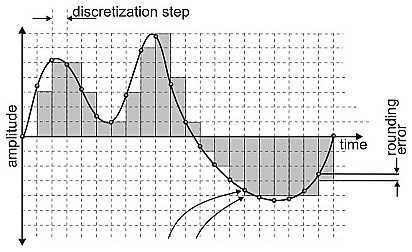

Стиснення з втратами застосовується, коли потрібно, як можна сильніше стиснути Такні, зберігши при цьому їх якість на прийнятному рівні.
Кодування з втратами виходить з того, що у вихідних незжатих матеріалах міститься багато зайвої інформації, яка не несе ніякої користі для слуху, її можна виТаклити, внаслідок чого добитися підвищення рівня стиснення.
Більшість методів кодування з втратами ґрунтується на використанні недосконалості нашого з вами слухового апарату, а так само ряду хитрощів пов'язаних з переквантуванням і передискретізацією.
У процесі стиснення аудіо Такні аналізуються кодером на предмет виявлення різних тонкощів звучання, якими можна знехтувати. Для підвищення стиснення можна позбутися від прихованих частот, які ми погано чуємо, але тим не менше вони присутні (це стосується діапазону нижче 20Гц і вище 22КГц).
Але при такому стискуванні дуже часто разом з «зайвим» відбувається нехтування корисним сигналом, що створює часто істотну різницю в порівнянні звучання з оригіналом. При такому кодуванні працює правило - чим сильніше стиск сигналу, тим сильніше можливі втрати корисного сигналу.
Порівняння звукових форматів зі стисненням з втратами:
| Назва формату | Розширення файлу | Частота дискретизації, кГц | Кількість каналів | Бітрейт, кбит/с | Затримка, мс | Постійний бітрейт | Змінний бітрейт | Випуск |
|---|---|---|---|---|---|---|---|---|
| AC-3 | .ac3, .vob та ін. | 32; 44.1; 48 | до 6 (AC-3),
до 13.1 E-AC-3 |
32—640 (AC-3),
до 6144 E-AC-3 |
40.6 | Так | Ні | 1992, Dolby Laboratories |
| ATRAC | .aa3, .oma, .at3 | 24—48 | до 8 | 292 (ATRAC1 — стерео),
1168 (ATRAC1 — 8 каналів), 48-352 (ATRAC3plus) |
>100 | Так | Ні | 1992, Sony Corporation |
| MP3 (MPEG-1, 2, 2.5 Audio Layer III) | .mp3 | 8; 11.025; 12; 16; 22.05; 24; 32; 44.1; 48 | до 2 | 8—320 | >100 | Так | Так | 1993, MPEG ISO/IEC 11172-3 |
| AAC | .аас, .m4a, та ін. | 8—192 | до 48 каналів | 8—529 (стерео) | 20−405 | Так | Так | 1997, ІСО/МЕК Комітет по звуку MPEG |
| Windows Media Audio | .wma | 8; 11.025; 16; 22.05; 32; 44.1; 48; 88,2; 96 | до 8 і вище | 4—768 | >100 | Так | Так | 1999, Microsoft |
| Vorbis (Ogg) | .ogg | 8—192 | до 255 | до 1000 | >100 | Так / ABR | Так | 2000, Xiph.Org Foundation |